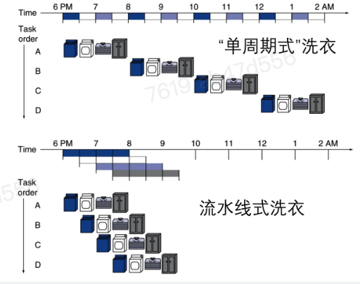
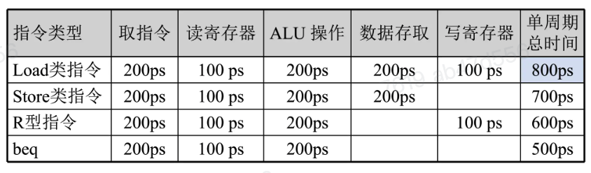
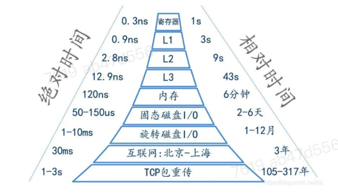
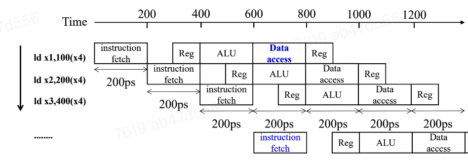
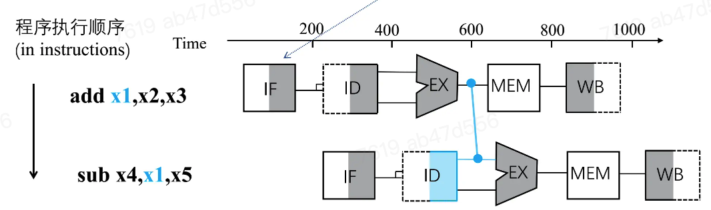
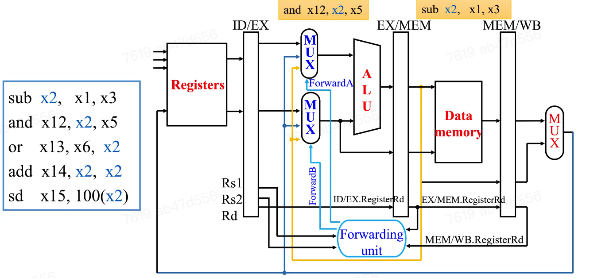

流水线处理器
生活中的流水线¶
假设洗衣服包含四个步骤：洗衣机中洗衣、烘干机烘干、叠衣服、收纳，每个步骤耗时0.5h

假如洗衣服阶段分为n段，加速比为\(2*4/(2+0.5*3)\approx 2.3\)
RISC-V指令执行的五个阶段¶
- IF，从指令存储器中取出指令
- ID，读寄存器堆并译码指令
- EX，ALU执行操作或者计算地址
- MEM，访问数据存储器
- WB，将结果写回寄存器
让五个阶段重叠执行可提高性能
流水线性能分析¶
- 假设各个阶段的耗时：
- 寄存器堆的读或写为100ps
- 其他阶段为200ps
- 比较流水线指令执行与单周期指令执行的平均执行时间

计算机各种延时示意图
点击展开

流水线加速比¶
- 如果让流水线各阶段操作平衡
- 例如：所有阶段需要相同的时间，则
- 通过提高指令吞吐率来提高性能
- 单个指令执行时间没有减少，反而可能增加
面向流水线的指令系统设计¶
- 所有的RISC-V的指令长度相同
- 只有六种指令格式，格式整齐
- 存储器操作（耗时操作）只出现在
load/store操作中
流水线冒险¶
有时在下一个时钟周期中无法正确执行相应指令，称之为冒险
冒险分为三类：结构冒险、数据冒险、控制冒险（分支冒险）
结构冒险¶
假设流水线结构只有一个存储器（指令和数据共用）
如果下图出现了第四条指令，那么在第一条指令从存储器取数据的同时，第四条指令从同一个存储器取指令，流水线发生结构冒险

流水线数据通路需要可以独立访问的指令存储器和数据存储器（哈佛架构，也是区分冯诺依曼架构的最主要依据）
数据冒险¶
指一条指令依赖于前面一条尚在流水线中的指令运行结果，比如
add x19, x0, x1
sub x2, x19, x3
可能的解决方法——前递¶
ALU计算出结果，立刻传数据给后续指令使用，而不是等到数据到达寄存器或存储器

载入-使用型数据冒险¶
前递不能避免所有的流水线停顿
- 当载入指令要取的数据还没被取回，而后续指令却需要该数据
-
一种可能的解决方案：流水线停顿(stall)，也称为气泡
-
重排代码以避免流水线停顿
例：code: a=b+e; c=b+f
假如流水线CPU有前递机制
ld x1, 0(x31)
ld x2, 8(x31)
add x3, x1, x2
sd x3, 24(x31)
ld x4, 16(x31)
add x5, x1, x4
sd x5, 32(x31)
解决数据冒险的方法¶
前递¶
ALU相关指令中的数据冒险
sub x2, x1, x3 # x2:10(before)
and x12, x2, x5 # x2:-20(after)
or x13, x6, x2
寄存器堆的硬件实现：一个周期内先写后读，若写操作发生在前半时钟周期，而读操作后半时钟周期，那么读操作会得到本周期内被写入的值
关键在于如何确定前递？
数据冒险的检测方法¶
- 命名流水线寄存器中的具体寄存器
- EX阶段，ALU操作数来源于立即数或寄存器
- EX冒险和MEM冒险
1a. EX/MEM.RegisterRd == ID/EX.RegisterRs11b. EX/MEM.RegisterRd == ID/EX.RegisterRs22a. MEM/WB.RegisterRd == ID/EX.RegisterRs12b. MEM/WB.RegisterRd == ID/EX.RegisterRs2
要注意的是，并非所有的指令都要写回寄存器，例如
Rd=0的情况：sub x0, x1, x3
在某些情况下还会出现二次冒险的情况，如：
add x1, x1, x2
add x1, x1, x3
add x1, x1, x4
EX冒险检测¶
MEM冒险检测：两次数据冒险¶
MEM冒险前递的条件：只有EX冒险不发生的时候才前递
实现前递¶
例：
sub x2, x1, x3
and x12, x2, x5
新增一个前递处理单元(Forward unit)用于判断是否需要前递操作，在ALU输入前加入两个MUX用于选择（该指令从寄存器堆读取的/上一个ALU计算结果的前递/来自数据存储器挥着更早的ALU计算结果的前递）数据

停顿¶
载入使用(load-use)型数据冒险¶
例：
ld x2,20(x1)
and x4, x2, x5
or x8, x2, x6
- 在ID阶段进行检测
- ALU操作数寄存器字段名称为
- IF/ID.RegisterRs1, IF/ID.RegisterRs2
- 检测条件：
ID/EX.MemRead and ((ID/EX.RegisterRd = IF/ID.RegisterRs1) or (ID/EX.RegisterRd = IF/ID.RegisterRs2))
如何停顿流水线？
被停顿的指令正处于ID阶段:
- 将ID/EX寄存器中控制信号全置为0(RegWrWrite, MemWrWrite...)
- 被停顿的指令在EX, MEM, WB 阶段执行空指令 nop
- 不会有寄存器或者存储器被写入数据
- 禁止PC寄存器和IF/ID寄存器内容发生改变
- ID阶段的寄存器会继续使用IF/ID寄存器中相同字段读寄存器
- 下一条指令会重新取指
- 1个时钟周期的停顿，能够让ld指令的MEM阶段完成
- 就可以把取到的数据前递到EX阶段